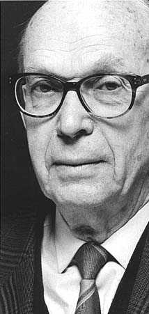
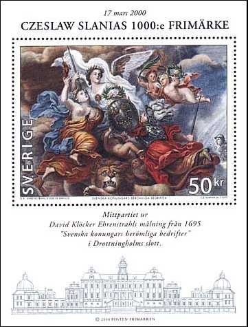
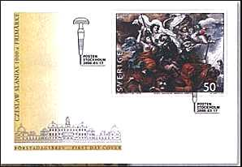
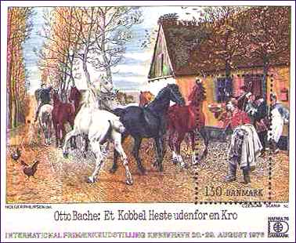
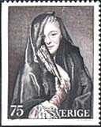
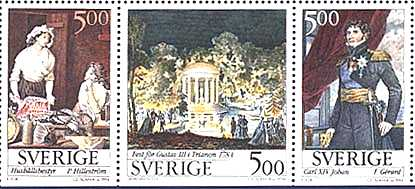
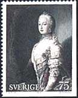
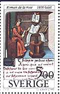
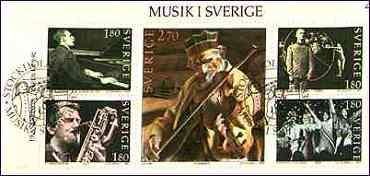
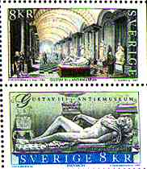

Dedicated to Chuck Matlack (+)
|
Czeslaw Slania
(pronounced Chess-wav Swan-ya) was born near Katowice, Poland in 1921.
He entered the Krakow School of Fine Arts at the age of 24. Employed
for six years by the Printing Office of the
Polish Government, Slania engraved his first stamp in 1951. Escaped
to Sweden in 1956, he engraved the same year his first stamp
for the Swedish Postal Administration. An year later Slania has been
appointed by the Swedish Postal
Service as a full time engraver. Since then, he has been
appointed as the Royal Court Engraver in Sweden, but also in Denmark and Monaco, and
won numerous awards for the quality and the beauty of
his engravings. Czeslaw Slania is considered the world's most famous
stamps engraver ever. Although already holding the world's record for the greatest number of fine engravings, he had a personal goal of 1,000 engraved stamps. This incredible result was attained this year, more exactly on March 17, 2000, when a Souvenir Sheet, reproducing a work of the baroque painter David Kloecker Ehrenstrahl (1628-1698), was issued by the Swedish P.A. The ceiling painting named "The Wonderful Deeds of Swedish Kings", shown on the sheet below, is located in the Drottningholm Caste, the residence of the Swedish Royal family. The work was finished in 1695, three years before the painter's death. |
 |
|
Tip: Point on the stamps with the mouse index for more information. |
 |
 |
 |
The 1000th Slania's stamp, reproduced above, recently entered in the
Guinness Book of Records, as the biggest engraved stamp ever.
Czeslaw Slania engraved not only stamps, but also banknotes, for many countries.
Among the countries for which he worked are: Argentina, Australia, Brazil,
Denmark, England, Estonia, Faeroe, France, Germany, Greenland, Iceland,
Ireland, Israel, Jamaica, Kazakhstan, Latvia, Lithuania, Monaco, New
Zealand, Poland, Portugal, San Marino, Sweden, the United Nations and the
United States. He is continually on the way and admits that he don't always
know in which country he is at a given moment.
|
 |
 |
 |
Mr. Slania said about his 1000th stamp: "This is until now my best work, but just wait till I'll reach the age of 100 - then I'll be EVEN better..." I hope that the future will give both of us the chance, to Mr. Slania to engrave his centenary anniversary stamp and to myself to publish it on this page, that is, in AD 2021.
|
 |
 |
 |
Links:
-
Chuck Matlack (+) was the first to publish on the Web a page dedicated to the great engraver. It appeared under the title: Collecting the Works of Czeslaw Slania.
-
Monaco stamps engraved by Slania.
-
Slania engravings on SNA stamps
-
A site dedicated to Slania.
| Published: 3/17/2000.
Revised: 06/04/03.
Copyright © 2000 - 2003 by Victor Manta, Switzerland. All rights reserved worldwide. |
|